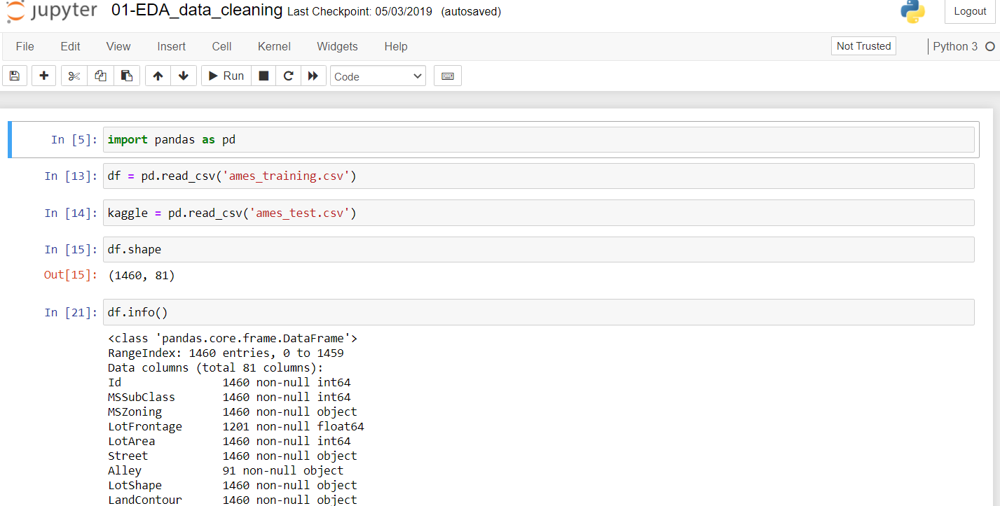
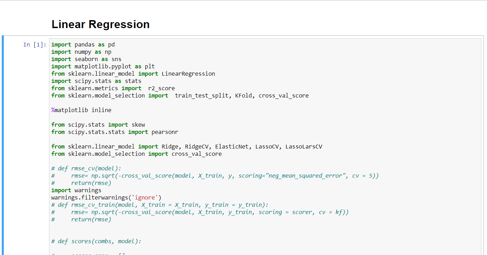

Data cleaning using Jupyter notebook may 2021
Posted on
May 20, 2021
by
Yussuf Ismail
The Usage of Jupyter notebook to conduct data cleaning and data explorations.

Posted on
May 19, 2021
by
Yussuf Ismail
This notebook tests two linear regression models without regularization.
A model including all numerical features performs more
strongly than a model limited to the five most correlated features.
